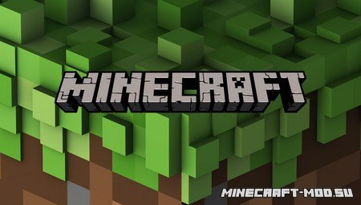
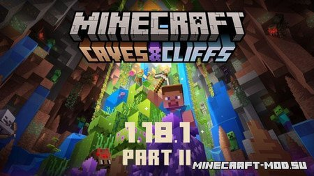
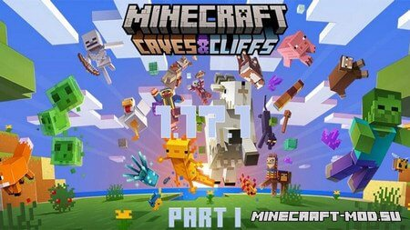
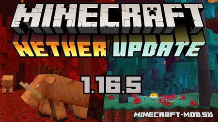
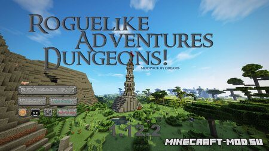

Well, the way they make shows is, they make one show. That show's called a pilot. Then they show that show to the people who make shows, and on the strength of that one show they decide if they're going to make more shows.
Скачать Minecraft
В этой новости будут всегда выкладываться последние версии игры Майнкрафт.
Like 32510
Просмотров: 3 879 038
Well, the way they make shows is, they make one show. That show's called a pilot. Then they show that show to the people who make shows, and on the strength of that one show they decide if they're going to make more shows.
Like you, I used to think the world was this great place where everybody lived by the same standards I did, then some kid with a nail showed me I was living in his world, a world where chaos rules not order, a world where righteousness is not rewarded. That's Cesar's world, and if you're not willing to play by his rules, then you're gonna have to pay the price.
You think water moves fast? You should see ice. It moves like it has a mind. Like it knows it killed the world once and got a taste for murder. After the avalanche, it took us a week to climb out. Now, I don't know exactly when we turned on each other, but I know that seven of us survived the slide... and only five made it out. Now we took an oath, that I'm breaking now. We said we'd say it was the snow that killed the other two, but it wasn't. Nature is lethal but it doesn't hold a candle to man.
You see? It's curious. Ted did figure it out - time travel. And when we get back, we gonna tell everyone. How it's possible, how it's done, what the dangers are. But then why fifty years in the future when the spacecraft encounters a black hole does the computer call it an 'unknown entry event'? Why don't they know? If they don't know, that means we never told anyone. And if we never told anyone it means we never made it back. Hence we die down here. Just as a matter of deductive logic.
Игровые клиенты чистые
В этой новости будут всегда выкладываться последние версии игры Майнкрафт.
Like 13256
Просмотров: 1 079 038
Игровые клиенты чистые
Традиции разработчиков остаются неизменными в плане исправлений ошибок и релиз Minecraft 1.17.1 не заставил долго себя ждать.
Like 3326
Просмотров: 870 321
Игровые клиенты чистые
Совсем не значимое обновление до версии 1.16.5 Java Edition, которое исправит пару мелких вылетов с игры.
Like 4226
Просмотров: 10 870 321
Игровые клиенты чистые
Совсем не значимое обновление до версии 1.16.5 Java Edition, которое исправит пару мелких вылетов с игры.
Like 4226
Просмотров: 10 870 321
Майнкрафт на компьютер (ПК) примечателен тем, что в него удобно играть. Быстрая скорость, меньше лагов, больше монитор — это создаёт хорошее впечатление от геймплея. Причём клиенты чистые не тормозят, обеспечивая оптимальную производительность. и не искажают игру Сама же PC версия активно обновляется и дорабатывается разработчиками, что приводит к положительному результату. Также на ПК можно установить клиенты с модами или по другому - сборки. В итоге вы расширите рамки игрового мира и познаете много интересного. Существует масса отличного и полезного материала на десктоп. Скачивать такой, контент на компьютер не вызовет особых проблем, так как релизы Minecraft разбиты по версиям для удобства. Удачи!